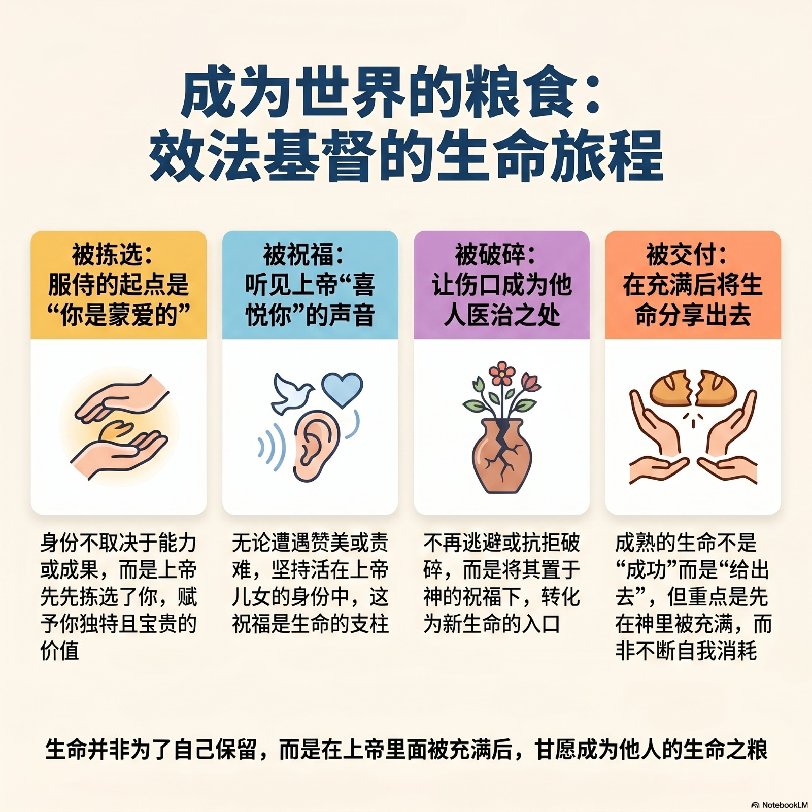

当耶稣拿起饼, 祝谢、擘开, 拿给门徒, 这些手势可说是归结了耶稣的一生。耶稣在永恒中被拣选、在约旦河受洗时被祝福、在十字架上被破碎、当作生命的饼给了世人。被拣选、祝福、破碎、给了别人, 就是圣子耶稣基督的庄严属天旅程。
当我们擘饼、说“这是基督的身体”分给人, 表示我们定意效法基督的生命, 愿意活出被拣选、祝福、破碎的生命, 成为世界的生命之粮。
耶稣被天父挑出来, 更好的说法, 是被天父拣选。拣选表达了特殊的关系, 是被挑选出来、受天父特别的眷爱关照。在这个社会, 挑选意味有些人是选不上的。天父的眼光却不是这样, 天父拣选祂的儿子, 显明我们也是被拣选的。
服侍一段日子的我们, 请审查是否进入以下状态：服侍受挫 → 我没有价值；无人需要我 → 我失去身份；看不见果效 → 我开始焦虑；别人比我优秀 → 我开始比较。
不是：先有能力、先有成果、先有恩赐。而是：上帝先拣选了你。
耶稣是被祝福的。当祂在约旦河受洗, 有声音从天上说: "祢是我的爱子, 我喜悦祢" (可 1:11), 是这祝福成为耶稣生命的支柱。无论遭逢什么事, 赞美或责难, 祂都抓住那祝福, 祂总记得自己是天父喜悦的儿子。
耶稣来到世界, 要与我们分享那祝福。祂开我们的耳朵, 让我们听见祂说: “你是我的爱子, 你是我的爱女, 我喜悦你”。 我们如果听到、相信并且记住那声音, 尤其在生命暗淡之际, 就能活出天父蒙福儿女的生活, 并且有能力与别人分享这祝福。服侍者最大的危险, 不是累, 而是：忘记自己是蒙福的人。
耶稣在十字架上被破碎。祂接纳受苦、死亡为祂的使命。我们也是被破碎的, 我们在生活中经历身体、心灵、意志, 以及关系破碎之苦。服侍者的生命常常经历误解、疲惫、孤单、创伤、委屈、背叛、毁谤…… 然而, 很多服侍者的问题不是“有破碎”, 而是“不允许自己破碎”。
耶稣要我们接纳自身破碎, 放置于天父的祝福之下, 作为成圣与炼净的器皿。如此, 生命的破碎反倒成为新生命的入口。
耶稣被交付给世界。天父的爱子从太初被拣选, 在十字架上破碎, 以致祂一人的生命却能倍增, 成为世世代代人的生命之粮。真正成熟的生命, 不是“成功”, 而是愿意成为别人的粮。重点不是不断消耗自己, 而是在上帝里面被充满后, 再被分给世界, 否则服侍者会耗尽与空洞。

若离开岗位, 我还知道自己是谁吗?若离开岗位或我无法再服侍，我还知道自己是谁吗？请用一到两句话来回答“我是谁？”
2. 我最近最真实的状态是什么?(疲惫? 麻木? 委屈? 比较? 孤单? 平静? 喜乐? 焦虑? 压力?)
我里面最常出现的声音是什么？
我是否长期活在自责与不够好？今天的灵修对你说什么？
我更容易记得人的批评，还是神的应许？今天的灵修对你说什么？
我有多久没有真正安静聆听神？(多少天、月、年？)
我是否越来越失去喜乐？
3. 上帝曾经托付我的起初呼召是什么? 今天是否偏离了单纯?今天是否偏离了单纯?
我现在的服侍，还是出于爱吗？
我希望别人记得我的是什么？
4. 若上帝此刻温柔地问“孩子，你累了吗？”我最真实想回答祂什么？如果你的回答是“是的，我累了！”请尝试完成以下的句子
当你安静来到上帝面前，你感受到祂会如何温柔回应你？请写下来。”